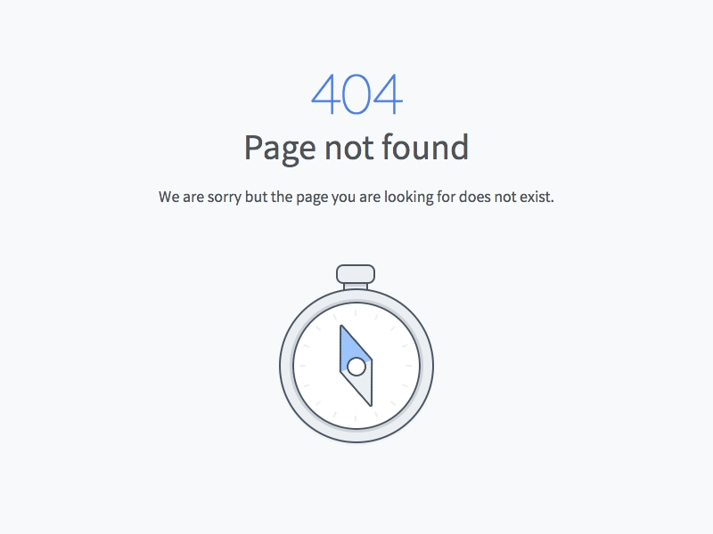

<div class="smart-body" id="smartBody">
    <div class="notfound">
        
    </div>
    <div class="text-center">
        <button class="smart-btn" routerLink="/dashboard" (click)="getBack()"><i  [ngClass]="'fa fa-house smart-icon'"></i>Back to home</button>
    </div>
</div>

